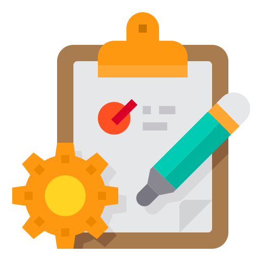
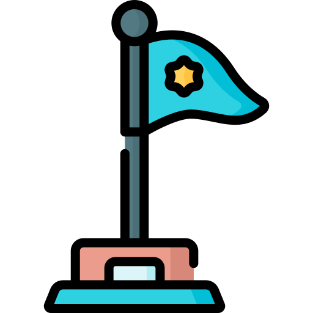

Tip1: Track your time
September 29, 2021 by tahjay thompson

So typically we use our time as we see fit, but this is not the case, our time is limited on Earth so track it and use it wisely to do this. I suggest you Use, notion or any other note-taking app or journaling book.
Why track time?, It is because we can control what we do with it and this further improves our productivity, time can be better tracked with the 80/20 rule. Look at your day, what is that or those tasks that take up 80% of the time to write them down.
I can bet that these are 20% percent of your daily tasks. I normally just fight to get finish or do too much and not get anything to finish.
After I ,found these tasks I then look to see if they can be removed or time spent on these can be reduced. Typically the simplest of things take the most time. But why, this is because humans in this century feel if they have more time it should be used.
The Pareto Principle of productivity can fix this, this is a wider issue also which am not compelled to go in now but our workforce is a bit “zombinated” work from 9 to 5 buy life insurance, retirement and die this is not a wise way to live.
Tip2: Be Lazy
September 27, 2021 by tahjay thompson

These might not be words you want to hear but lazy people are highly productive and are built with the 80/20 rule of productivity. I say this because when you are lazy you will try to find easier ways to get stuff done, this is what makes them productive.
Ok, am lazy. when I was creating this website on productivity I was trying to “the Be Perfect ” blog I saw that I was going back to redo finish code and stuff.
This was a form of me being lazy, the times when I did this was the times when I had to make big code decision and I wasn't feeling that vibe to do it.
What I did, was to see if there was an alternative to get that task done simpler. I had to use the 80/20 rule to guide the entire coding process.
20% of the big codes were doing 80% of the work to show the blog to you. 80% of the code I was doing over did 20% of anything on the blog, hence I could stop that 80% and do the 20% get this blog off.
If I was not lazy, I would feel as if I should sit and code all the unnecessary code until boredom sets in and I left.
Bill Gates has a quote on why he hires lazy people -’ Because a lazy person will find an easy way to do it.